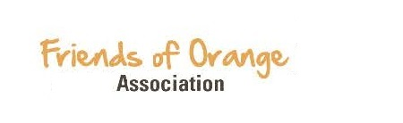

Friends of Orange

Objectives of Friends of Orange Athletics Association
The objectives of the Friends of Orange Athletics Association are:
- to support sports and recreation to members and non-members in the NW communities that feed into William Aberhart High School;
- to undertake fundraising;
- to encourage donations of funds, skills and services from among the membership of the society and the broader community and region;
- to give, loan or donate money, property, equipment, furnishings or supplies to deliver programs, to promote sports and recreation to students, or to support the school community; or provide funding for special program
- to pay the expenses of providing beneficial programs, activities, experiences and opportunities, including but not limited to, those of an athletic, charitable, recreational, social or vocational nature; and
- to encourage and foster among its members a recognition of the importance of broad-based community support to the achievements of students and educators at the high school level.
| Title: | Name: | Email: |
|---|---|---|
| Chair | Ron Ramsaran | ramsaranr@me.com |
| Past Chair | Susan Bennett | |
| Vice Chair | Open | |
| Key Communicator | Catherine Moar | |
| Treasurer | Michelle McAdam | |
| Secretary | Larry Adorjan |